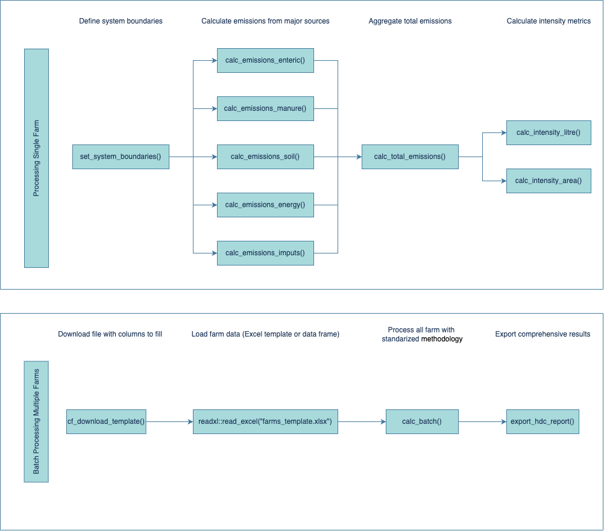

Workflow overview
This vignette presents the overall workflow used by
cowfootR to estimate dairy farm greenhouse gas (GHG)
emissions. The flowchart below shows the main stages (data inputs,
system boundaries, emission modules, aggregation, and reporting).

What the diagram covers
- Inputs: Herd structure, milk production, feeds and purchased inputs, soils and manure management, energy, and other farm parameters.
- System boundaries: Definition of included and excluded processes for a consistent footprint (aligned with IPCC/IDF guidance).
- Emission modules: Enteric methane, manure, soils (N2O), energy, and indirect inputs.
- Aggregation: From module-level emissions to farm-level totals (CO2e).
- Intensity metrics: Emissions per litre FPCM and per hectare.
- Reporting: Batch and single-farm outputs, plus optional benchmarking.